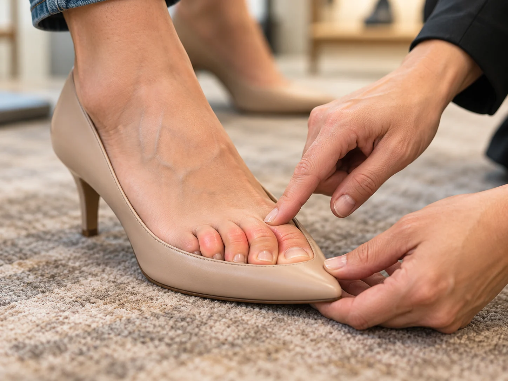
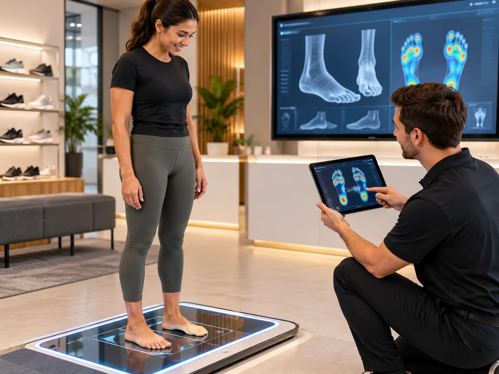

People · Skills · Better fit · Brighter lives
Better conversations. Better fit. Better business.
A professional capability standard for footwear retailers, clinics, distributors and teams that want stronger customer conversations, more consistent fitting and responsible commercial performance — with or without scanning technology.
Service becomes performance when the fit is understood.Discovery → proof → clear recommendation → confident customer choice.
Founder training experience includes teams across global footwear and retail organisationsTraining experience shown; not presented as organisational endorsement of BrightPath Academy.
Global Footcare AU / NZ / SGMAP IndonesiaASICS Middle EastPrimer Group AsiaRunners Middle EastApparel GroupIRUN PolandFootprints PodiatryBody Mechanix
Value at a glance
Start with the problems teams solve every day.
A company should learn something useful before it ever reaches the course catalogue. BrightPath leads with the real fit challenges that make trained conversations matter.
Long-shift fatigue
Work, flooring, shoe structure and support all affect how feet feel after hours of standing. Teams learn to ask about the real use case before recommending.
What a specialist notices →
Cramped toes and shape mismatch
Length is only one measure. Width, shape and volume decide whether a shoe stays comfortable — and most customers have never been measured for all three.
How fit changes the conversation →
Technology without explanation
A scanner is only useful when staff can translate the data into careful, understandable language and connect it to what the customer says and feels.
Human + technology →1 · Listen firstOpen questions about work, activity and what hurts.
2 · Measure properlySize, shape and volume — not size alone.
3 · Explain clearlyPlain, careful language. No medical promises.
4 · Validate the fitWalk. Compare. Let the customer feel the difference.
The BrightPath Standard
One philosophy. Clear tools underneath it.
S.E.R.V.E. is the master customer philosophy. CLEAR, fit assessment and practical validation sit beneath it as tools teams use inside the customer journey.
Signature commercial module
Master the Floor: where service becomes performance.
Three disciplines, one natural customer journey. High-performing teams uncover real needs, demonstrate value before discussing price and guide customers to confident decisions without pressure.
Master the Floor
Three things to remember on the floor.
This is the commercial application of the Academy standard — memorable enough for a five-minute team huddle and robust enough for enterprise coaching.
Engagement→Confidence→Conversion→Relevant attachment→Repeat→Referral
Program architecture
Four clear products. One professional learning ecosystem.
Visitors see the qualification structure first. Detailed lessons sit inside each program rather than dominating the homepage.
Flagship credential
Certified Fit Specialist
Core fitting, customer assessment, responsible recommendation, service language and practical application.
- Core curriculum + pathway
- Knowledge assessment
- Recorded practical roleplay
Role-specific
Retail & Clinical Pathways
Context-specific learning for footwear floors, clinics and medical-adjacent settings while protecting professional boundaries.
- Retail category fitting
- Clinical scope and referral
- Scanner or hands-on route
Advanced capability
Master Fit Specialist
For top performers and team leads who coach colleagues, handle complex fit conversations and help lift standards.
- Advanced fitting scenarios
- Coaching and feedback
- Train-the-trainer pathway
Leadership
Manager Academy
Turns learning into consistent floor behaviours through team huddles, field coaching, measurement and review rhythm.
- 10-minute huddle system
- Behaviour observation
- Baseline-led performance review
For organisations
One standard across every store, clinic and market.
International companies need more than content. They need rollout, visibility, coaching and credential control across locations and roles.
Build a coaching rhythm, not a one-off training day.Short huddles, field observation and immediate practice make the standard visible on the floor.
Enterprise rollout
Baseline → Certify → Coach → Measure → Refresh
1
BaselineEstablish current behaviours and business context.
START2
CertifyCore learning, pathway and practical assessment.
LEARN3
CoachManager huddles and one focused floor improvement at a time.
APPLY4
MeasureBehaviours, customer outcomes and commercial indicators together.
REVIEW5
RefreshQuarterly reinforcement and capability development.
SUSTAINOrganisation visibilityIllustrative enterprise view
72%Team pathway progress
18Active credentials
04Practical reviews due
Credential integrity
Capability — not attendance.
The Certified Fit Specialist credential combines core learning, a pathway, knowledge assessment and practical demonstration, with honesty and professional boundaries as must-pass standards.
BrightPath Academy · Professional Credential
Certified Fit Specialist
Professional footwear fitting, customer assessment and responsible recommendation.
Credential IDBP-CFS-XXXX
PathwayRetail or Clinical
Knowledge30 questions · 80% pass
PracticalRecorded roleplay
Three gates protect the standard.
80%
Knowledge30-question final exam with 24 correct required to pass.
PR
PracticalThe customer scenario is practised and recorded with and without a scanner for assessor review.
HS
Honesty & scopeNo diagnosis, no unsupported claims and no ignored red flags.
Our foundation · BrightPath Academy
People first. Knowledge with purpose. Growth through service.
An academy should stand for more than courses. Our philosophy guides every fitting conversation, our vision sets the direction, and our purpose defines the impact we want to create for professionals and organisations.
Our Philosophy
We believe exceptional selling begins with understanding people. Through emotional intelligence, genuine service, professional knowledge and technology, we create customer experiences built on trust, confidence and lasting relationships.
“Help, don’t sell.”
Our Vision
To become an internationally recognised centre of excellence for service-led selling, professional footwear fitting and technology-enabled customer experiences.
One meaningful standard across people, teams and markets.
Our Purpose
To develop confident professionals, empower businesses and transform everyday customer interactions into meaningful experiences that deliver value for people and sustainable growth for organisations.
Capability that serves the customer and strengthens the organisation.
Our brand promiseBetter conversations. Better fit. Better business.
Experience behind the Academy
Built from the floor, the fitting room and the training room.
BrightPath Academy is led by Akuchu Wilson, whose work has focused on the intersection of foot-scanning technology, retail execution and team development across multiple markets.
Global field experience translated into a repeatable standard.
More than seven years of training and field execution across the Middle East, Asia, Europe, Australia and New Zealand informs the Academy’s practical design. The goal is not to create scripts. It is to help people think better, explain fit clearly and serve customers responsibly.
“We are here to help you find what meets your needs, not to sell you what you don’t need.”
Business Development & TechnologyAustralia · 2026–now
International Sales Excellence & TrainingAetrex International · 2024–2026
Area Sales Excellence & Brand TrainingMiddle East · 2020–2024
Retail foundationsMiddle East · 2018–2020
Frequently asked
What enterprise teams usually want to know.
No. The standard supports both scanner-assisted and hands-on fitting. Technology can add evidence, but trained observation, measurement, fit validation and careful language remain essential.
No. The Academy blends service, foot and fit knowledge, technology confidence, communication and commercial performance. The customer stays in control of the decision.
Certification combines core learning, a pathway, a 30-question final exam with an 80% pass mark and a recorded practical roleplay. Scope and honesty are must-pass standards.
The enterprise model is designed around a shared standard, manager coaching, progress visibility and structured credentials by person and location.
Enterprise launch
Bring one fitting standard to your team.
Tell us what your business looks like — retail, clinical, distributor or multi-site network — and BrightPath Academy can structure the pathway, rollout and coaching rhythm around your starting point.
BrightPath Academy · A BrightPath Global company